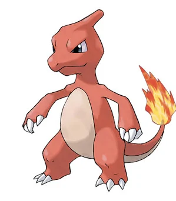

Charmeleon is also much more aggressive than Charmander. It is believed to have a vicious nature and will constantly seek out opponents. Strong opponents excite this Pokémon, causing it to spout bluish-white flames that torch its surroundings. It is a very ruthless, pitiless and zealous fighter often using its claws. However, it will relax once it has won.In their fervor, their tails often begin to burn a bluish-white; at night, they can light up mountainsides like stars if groups of them are present. Enraged Charmeleon often take out their anger on their surroundings, incinerating anything flammable around them with unrestrained Flamethrowers.